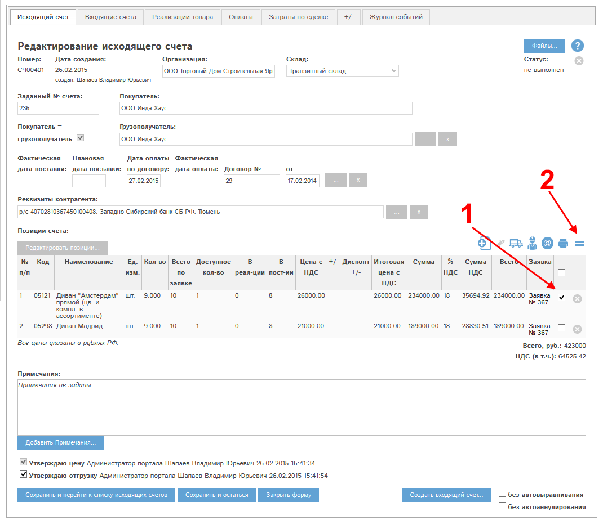
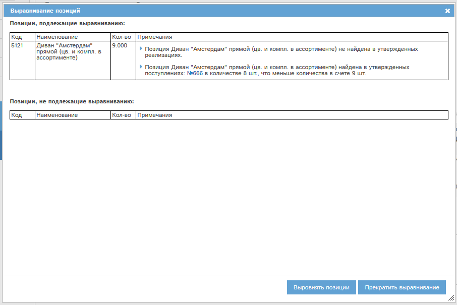

Выравнивание доступно для позиций исходящего счета с утвержденной ценой и отгрузкой.
Выравнивание проводится по следующему алгоритму:
- Если кол-во позиции в связанных поступлениях (и реализациях) равно нулю, то количество позиции будет обнулено.
- Если позиция - из любой товарной группы, кроме группы "Услуги": если кол-во позиции в связанных поступлениях меньше, чем в счете, то кол-во в счете будет установлено равным количеству в связанных поступлениях.
- Если позиция - это услуга из группы "Услуги": если кол-во позиции в связанных реализациях меньше, чем в счете, то кол-во в счете будет установлено равным количеству в связанных реализациях.
- Если кол-во позиции в связанных поступлениях/реализациях превышает, либо равно кол-ву в счете, то позиция выравниванию не подлежит.
- Выравнивание позиции исходящего счета автоматически приводит к ее выравниванию во всех связанных входящих счетах.
Для выравнивания необходимо выделить в карте счета требуемые позиции (1) и нажать кнопку  (2):
(2):

Рис. Вызов выравнивания позиций исходящего счета.
Для всех выделенных позиций программа выдаст окно подтверждения, состоящее из двух таблиц:
- позиции, подлежащие выравниванию
- позиции, не подлежащие выравниванию:

Рис. Подтверждение выравнивания позиций.
Нажатие кнопки "Выровнять позиции" приведет к выравниванию всех подлежащих выравниванию позиций.
Нажатие кнопки "Прекратить выравнивание" останавливает выравнивание выбранных позиций.
После проведения выравнивания карта счета обновится, и если было проведено выравнивание всех позиций, то счет перейдет в статус "Выполнен".